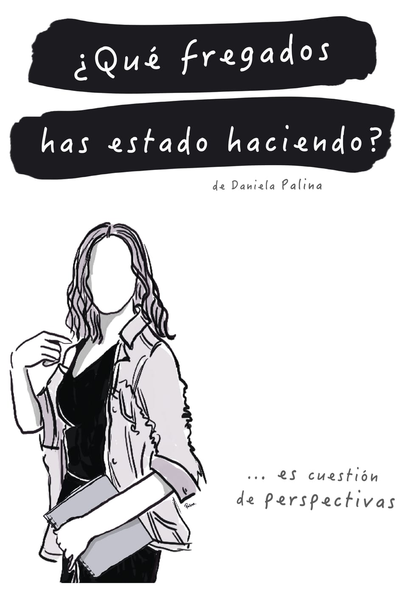

Primer libro
El primer libro de Daniela Palina: historias reales, con humor y honestidad, para cuestionarte y reencontrarte contigo mismo.
Sinopsis
¿Qué pasa cuando llegas a la adultez y sigues sin tener claro quién eres ni qué quieres hacer con tu vida?
Entre tropiezos, corazones rotos, cambios inesperados, logros, decepciones y momentos de profunda reflexión, Daniela Palina, decide hacer una pausa para conocerse de verdad. Este libro reúne las lecciones que encontró en el camino, contadas con humor, honestidad y relatos tan reales que será imposible no identificarse.
Una invitación a perderse, reinventarse y descubrir que, a veces, el rumbo aparece justo cuando dejamos de buscarlo desesperadamente.
Testimonios
¿Qué fregados has estado haciendo?... ¿Te lo has preguntado? Seguramente la mayoría lo ha hecho, pero pocos son los que se toman el tiempo a consciencia de responderse. Esta historia personal, escrita por Daniela Palina te acompañará e incluso hasta te ayudará a que encuentres una respuesta. ¿Qué fregados has estado haciendo? te dejará uno de los mejores regalos de vida, el poder cuestionarte a ti mismo, apreciar la magia del aquí y ahora; y confiar en tu poder interior (que seguro es poderoso). Espero lo disfrutes tanto como yo.
— Alejandra CastañoDaniela Palina te comparte historias y experiencias de la vida cotidiana y no tan cotidiana con un toque de buen humor, que muestran grandes enseñanzas y mensajes para poner en práctica día a día; como el escuchar tu voz interna, hacer el balance de las cosas y ver el lado positivo a situaciones que se nos presentan en la vida. Este libro te acompaña a sentirte vulnerable, a aventarte a lo desconocido y sobre todo a mostrarte que todos podemos poner nuestro granito de arena en este planeta y ayudar a los demás de diversas maneras.
— Erick Prado